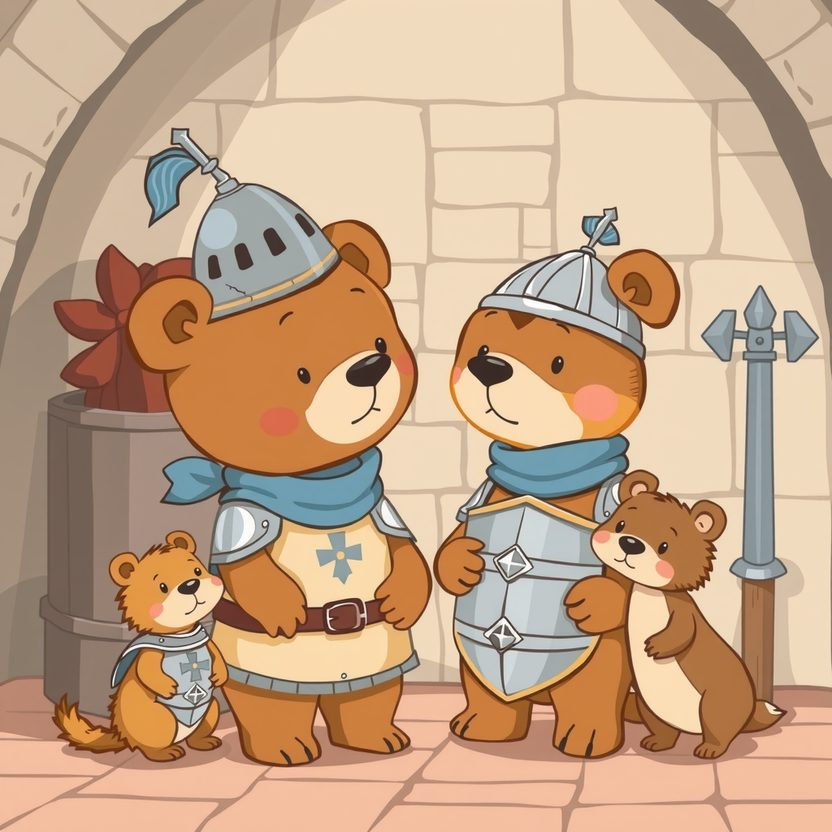

Titistoire › Les Étoiles (3-6 ans)
Nestor et l'armure trop petite
Une histoire de Nestor l'ourson pour parler de : s'aimer comme on est.

▶ Écouter et regarder l'histoire
Gratuit, sans inscription : la voix lit, le texte suit mot à mot, les images tournent comme dans un album.
Le texte de l'histoire
Au château de Hauteroche, c'est le grand jour : la reine Hermine choisit ses nouveaux chevaliers. Nestor en rêve depuis toujours. Ce matin, son cœur galope.
Mais dans la salle des armures, rien ne va. Le casque ? Il lui tient sur une seule oreille. La cuirasse ? Elle fait crac. Les bottes de fer ? Il n'y glisse qu'un orteil.
« Tu es trop grand, soupire Pépin, le petit écuyer hérisson, en écartant les bras. Trop large. Trop… tout. »
Sire Gontran, le paon chevalier, se pavane en faisant la roue dans son armure étincelante. « Un chevalier, mon gros, c'est fin, c'est léger, c'est élégant, claironne-t-il. Comme moi. »
Nestor veut s'incliner poliment. Patatras ! Son derrière renverse douze lances, trois boucliers et un seau. Toute la salle s'esclaffe.
Le pauvre ourson rougit jusque sous ses poils et rentre la tête dans les épaules. « Hmm… si seulement j'étais plus petit, songe-t-il. Si seulement je prenais moins de place. »
Alors Nestor essaie de rapetisser. Il rentre le ventre, marche sur la pointe des pattes, et va se tasser tout au fond, sur le plus petit tabouret.
Il ne grignote plus qu'une demi-tartine. Sa voix se fait toute basse. Et quand il se faufile par une porte, il s'excuse : « Pardon, la porte. »
Mais on a beau rentrer le ventre, un ourson reste un ourson. Et le petit tabouret fait crac, lui aussi.
L'après-midi, le carrosse doré de la reine s'avance sur le vieux pont-levis pour le grand défilé. Les trompettes sonnent, les drapeaux claquent au vent… mais les planches grincent, et le carrosse penche déjà.
Soudain… CRAAAC ! Une poutre du pont se brise net. Le carrosse penche, penche, au-dessus de l'eau noire des douves. « Au secours ! » s'écrie la reine en retenant sa couronne.
Sire Gontran accourt. Il tire sur le carrosse du bout des ailes. « Han ! » Rien ne bouge, pas d'un poil. Son armure a beau étinceler, elle ne sert à rien du tout.
Les chevaliers poussent, tirent, s'arc-boutent. Peine perdue ! Le carrosse glisse encore. Il est trop lourd. Beaucoup trop lourd.
Tout au fond, Nestor se déplie de toute sa hauteur, parmi les morceaux de tabouret. Il oublie de rentrer le ventre, il oublie de marcher sur la pointe des pattes.
Boum, boum, boum ! Le pont tremble sous ses pas. « Poussez-vous ! » tonne-t-il. Et cette fois, ce n'est pas lui qui demande pardon.
Nestor se glisse sous le carrosse. Il plante ses grosses pattes bien à plat sur les planches. Puis il arrondit son dos large, ce dos trop large pour toutes les armures du royaume.
« Hmmmmf ! » Il pousse. Le carrosse remonte d'un doigt. « HMMMMF ! » D'une patte entière. Ses bras tremblent, mais ils tiennent bon, solides comme deux troncs de chêne.
Et tout doucement, sans une secousse, Nestor dépose le carrosse sur la terre ferme. Ouf ! La reine n'a pas renversé une goutte de son thé.
Un grand silence tombe sur la cour. Puis la reine Hermine descend du carrosse, toute menue devant le grand ourson.
« Je voulais des chevaliers fins et légers, déclare-t-elle. Je me trompais. Il me fallait quelqu'un sur qui l'on peut s'appuyer. À genoux, Nestor ! »
Nestor s'agenouille. Même à genoux, il dépasse tout le monde d'une bonne tête. Et pour une fois, ça lui est bien égal.
On n'a jamais déniché d'armure à sa taille. Alors le forgeron lui en a forgé une tout exprès, avec deux marmites et un couvercle. Elle ne brille pas beaucoup, mais elle lui va à merveille.
Sire Gontran ne l'appelle plus « mon gros ». Il marmonne « Sire Nestor », raide comme un piquet, en regardant ailleurs. Et Pépin a une nouvelle cachette préférée : l'épaule gauche du chevalier.
Nestor ne rentre plus le ventre. Il franchit les portes sans s'excuser. Et quand il s'assoit, on lui réserve toujours le plus grand fauteuil. Celui qui ne fait pas crac.